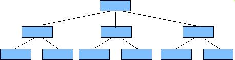

Lectura: Diseño de aplicaciones
Introducción
De la misma manera en que es necesario transferir el MER, que es fundamentalmente un modelo de análisis, al MR para hacer posible el diseño de una base de datos, para poder crear una solución que responda a lo analizado en el MFD, debe crearse un modelo de diseño. Las herramientas que utilizaremos para el modelo de diseño son elDiagrama de Estructura (DE) y los diagramas o tablas de Entrada Proceso Salida (EPS)
Módulo
Para hacer posible tratar con la complejidad de las aplicaciones, dividimos éstas en módulos. Los módulos, dependiendo del lenguaje o herramienta en la que se construya, corresponderán con:
- play_arrowFunciones
- play_arrowProcedimientos o Subrutinas
- play_arrowFormas
- play_arrowReportes
- play_arrowMétodos de una clase
En el nivel que presentaremos en el DE, podemos utilizar una etiqueta caracterástica para indicar en qué tipo de módulo estamos representando: F para formas, R para reportes, S para subrutinas, Y para funciones, M para método
Diagrama de estructura
El diagrama de estructura se utiliza para proponer los módulos que integrarán la solución, y la forma en la que un módulo cualquiera invoca a otros módulos.
En el DE, cada módulo en la estructura se representa con un rectángulo, con el nombre del mádulo en su interior, y para indicar que un módulo invoca a otro en su ejecución, el módulo que invoca se dibuja arriba, el módulo invocado se dibuja abajo y se traza una línea entre ambos. Opcionalmente, la línea puede ser una flecha indicando el sentido de la invocación. Un ejemplo simple de esto para una aplicación que calcula una amortización (secuencia de pagos para liquidar un préstamo con un determinado interés), sería el siguiente:
Esta aplicación consta de cuatro módulos: el módulo principal representa globalmente a la aplicación; el trabajo de la aplicación se divide en los tres módulos que se muestran, los cuales son invocados por el módulo principal.
La estructura de la solución es creada por el diseñador de la aplicación, esto es, a diferencia del análisis en la que la actitud del analista debe ser receptiva y objetiva, el diseñador es creativo, dentro del marco de cumplir con los requerimientos de negocio. Dado que la estructura es entonces una creación, se requieren algunos criterios para determinar si una estructura es mejor que otra.
A continuación presentamos diferentes formas de la estructura:
- play_arrow
Deben evitarse estructuras secuenciales como la que se
ilustra (se dice que estas estructuras son burocráticas, pues
suceden muchos pasos antes de realizar las acciones concretas):

- play_arrow
Se deben evitar estructuras complejas .Las estructuras en
las que un módulo tiene que invocar a muchos módulos y que cada
módulo es invocado por muchos módulos tampoco son deseables:
con una estructura de este tipo es muy difícil de modificar un
módulo porque es necesario analizar el efecto de la modificación
en todos los invocadores. Una excepción a esta regla es
la de los módulos de muy bajo nivel llamados funciones
básicas. Una función básica es un módulo con un objetivo
muy acotado y utilizable en muchos lugares de la aplicación
(ejemplos: una función matemática, un módulo para presentar
listas de valores, un módulo para seleccionar un archivo del
directorio); en el caso de estos módulos en normal y deseable
que sean invocados por diversos módulos.

- play_arrow
Es deseable, una estructura en la que en general se distingan
niveles y la comunicación entre módulos sea la indispensable es
la más deseable; este tipo de estructuras presenta una forma jerárquica:

Además de considerar la forma de la estructura, un convenio útil es utilizar una marca (un sombreado, o un asterisco en el nombre) cuando un módulo es invocado en más de un lugar de la estructura, para evitar cruzar líneas en el diagrama, consiguiendo una mayor claridad.
Entrada Proceso Salida
La herramienta de modelado que utilizaremos para detallar cada uno de los módulos presentes en la estructura es el diagrama (o tabla) Entrada Proceso Salida (EPS). Esta herramienta nos permite exponer de manera clara el objetivo de un módulo en términos de tres secciones: en la primera se manifiestan las entradas que recibe, en la segunda el proceso que efectúa para transformar esas entradas y en la tercera las salidas que produce.
Existen diversas notaciones para este tipo de diagramas o tablas, que varían esencialmente en la parte de proceso: algunos autores utilizan diferentes clases de flujo gramas en esta sección, otros algún lenguaje estructurado. Optaremos por definir un convenio de lenguaje estructurado. En cuanto al contenido de las secciones, se define a continuación:
- play_arrow
Entradas:
En la sección de entradas pueden aparecer uno o varios elementos de las siguientes categorías:
- Parámetros de entrada
- Criterios de selección de datos a transformar o consultar
- Objetos de la aplicación en determinadas condiciones iniciales
- Evento disparador de una acción
- play_arrow Procesos:
En la sección de procesos utilizaremos las siguientes construcciones posibles:
Mientras condición
operaciones
Fin MientrasRepite
operaciones
Hasta condición
Si condición entonces
operaciones
En otro caso
operaciones
Fin si
Las operaciones pueden ser:
variable = expresión
Llama módulo
{descripción informal de la operación}
Objeto.Propiedad=expresión
Objeto.MétodoComo podemos ver, en esta sección es donde definimos el pseudo_algoritmo de nuestro modulo.
- play_arrow
Salidas:
En correspondencia con la sección de entradas, en la sección de salidas pueden aparecer uno o varios elementos de las siguientes categorías:
- Parámetros de salida
- Resultados de consulta o datos transformados
- Objetos de la aplicación modificados
- Mensaje o manifestación de atención al evento
No se pretende crear un lenguaje formal para llenar las especificaciones de proceso: las condiciones, expresiones y operaciones pueden hacerse en forma textual. Lo que debe establecerse de manera precisa es el cómo obtener de las entradas indicadas las salidas requeridas, ya que esto será la documentación para pasar a la fase de construcción de la aplicación, fase en la que los recursos y tiempo no deberán distraerse para regresar a investigar detalles que pudieran haber quedado demasiado vagos en la especificación del diseño.
Para aquellos módulos que representan formas o reportes, además del EPS es necesario diseñar la apariencia y distribución en un esquema, dibujo, o haciendo uso de la herramienta de desarrollo correspondiente.